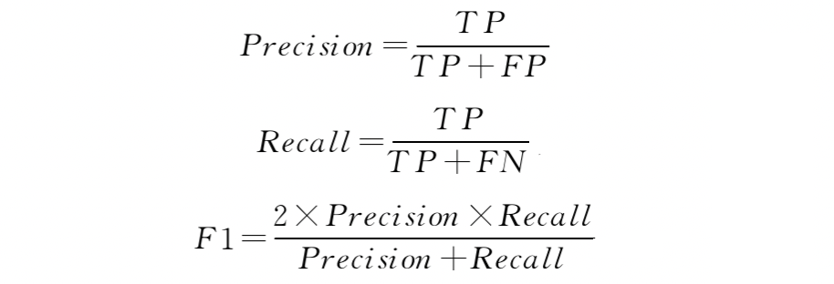
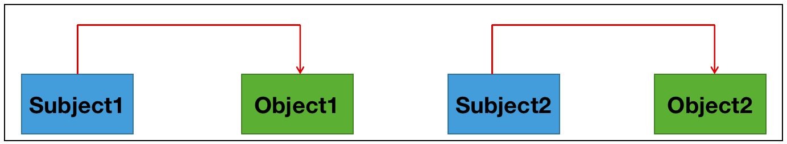
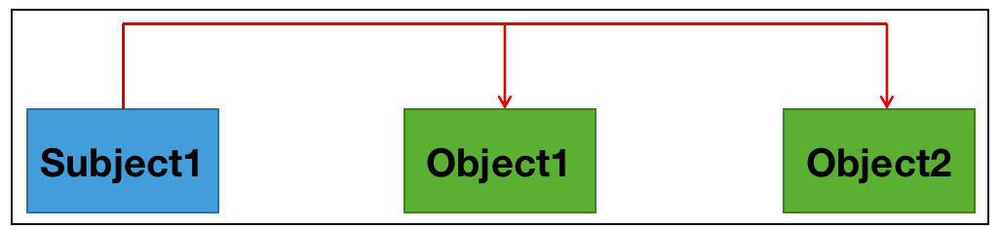
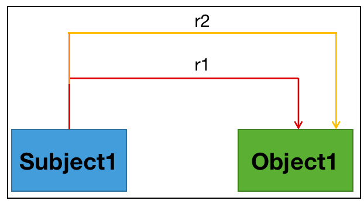

03 关系抽取基础知识介绍
关系抽取任务介绍¶
学习目标¶
- 理解关系抽取概念
- 了解关系抽取的任务特点.
- 掌握关系抽取任务的评价指标.
- 掌握实现关系抽取的常用方法
关系抽取概念¶
- 关系抽取就是从一段文本中抽取出 (主体，关系，客体) 这样的三元组，用英文表示就是(subject, relation, object)这样的三元组.
- 具体定义: 给定一个句子 S，其中包含实体 A 和实体 B，预测两个实体间的关系r ∈ R (R代表数据集中所有关系的集合) . 或者说，抽取实体之间的关系是将非结构化的文本信息转化为结构化的信息，最终以关系三元组〈S，P，O〉的形式来描述. 其中，S 和O为主、客实体，P为预测出的两个实体之间的关系.
- 关系抽取两大任务:
- 识别文本中的subject和object (实体识别任务)
- 判断这两个实体属于哪种关系 (关系分类)
关系抽取任务特点¶
- 关系抽取是一个文本分类问题，相比于情感分析、新闻分类等其他任务，关系抽取主要有3个特点:
- 领域众多，关系模型构建复杂. 针对一个或者多个限定领域的关系抽取的研究时间较长，研究者投入的精力相对开发领域多，因此方法众多，技术成熟.
- 数据来源广，主要有结构化、半结构化、无结构3类. 结构化数据针对表格文档、数据库等；半结构化数据针对如维基百科、百度百科等；无结构属于纯文本数据.
- 关系种类繁多且复杂，噪音数据无法避免，实体间的关系多样，有一种或者多种关系.
关系抽取评价指标¶
-
针对特定领域的关系抽取的结果，一般通过计算对应的准确率 ( Precision ) 、召回率 ( Recall ) 和 F1 值来评价．其中，准确率是对于给定的测试数据集，模型正确分类为正类的样本数与全部正类样本数之比；召回率则是对于给定的测试数据集，预测正确的正类与所有正类数据的比值；而 F1 值则是准确率和召回率的调和平均值，可以对系统的性能进行综合性的评价.对应的计算为:

关系抽取的常用方法¶
基于规则方式实现关系抽取¶
- 基于规则的知识抽取主要还是通过人工定义一些抽取规则，从文本中抽取出三元组信息 (实体-关系-实体) . 重点即是定义规则. 虽然定义规则这种抽取方式看起来有点 low，但却简单实用，很多时候，效果比很多高深的算法还要好一些 (非绝对，具体领域具体分析) .
- 基于规则方法的实现在后续章节介绍
基于Pipeline流水线方法实现关系抽取¶
- Pipeline方法是指在实体识别已经完成的基础上再进行实体之间关系的抽取.
- 基于Pipline流水线方法的实现在后续章节介绍
基于Joint联合抽取方法实现关系抽取¶
- Joint联合抽取方法通过修改标注方法和模型结构直接输出文本中包含的(ei ,rk, ej)三元组. Joint联合抽取方法又分为: "参数共享的联合模型" 和 "联合解码的联合模型":
- 基于joint联合抽取方法的实现在后续章节介绍.
关系抽取任务常见问题¶
- 正常关系 (Normal) 问题:
- 即三元组之间没有重叠, 数据中只有一个实体对及关系
- 如: “《人间》是王菲演唱歌曲“中存在1种关系: (王菲-歌手-人间)

- 单一实体关系重叠问题 (Single Entity Overlap (SEO) )
- 数据中一个实体参与到了多个关系中
- 如: “叶春叙出生于浙江，毕业于黄埔军校”中存在两种关系: (叶春叙-毕业院校-黄埔军校) 、 (叶春叙-出生地-浙江)

- 实体对重叠(Entity Pair Overlap (EPO)):
- 数据中一个实体对有两种不同的关系类型
- 如: “周星驰导演了《功夫》，并担任男主角”中存在2种关系: (周星驰-演员-《功夫》) 、 (周星驰-导演-《功夫》)
